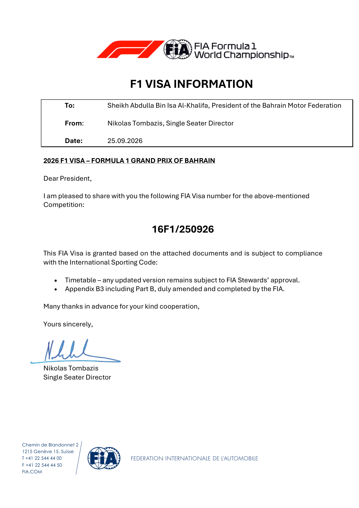
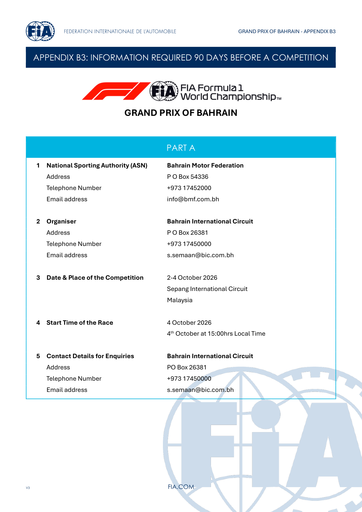
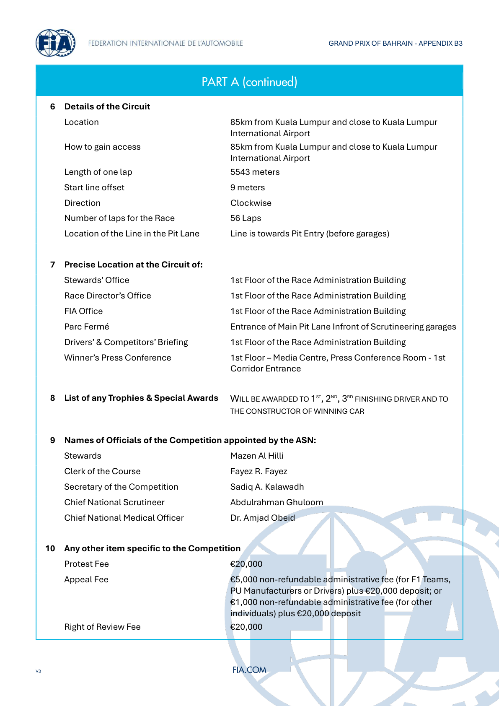
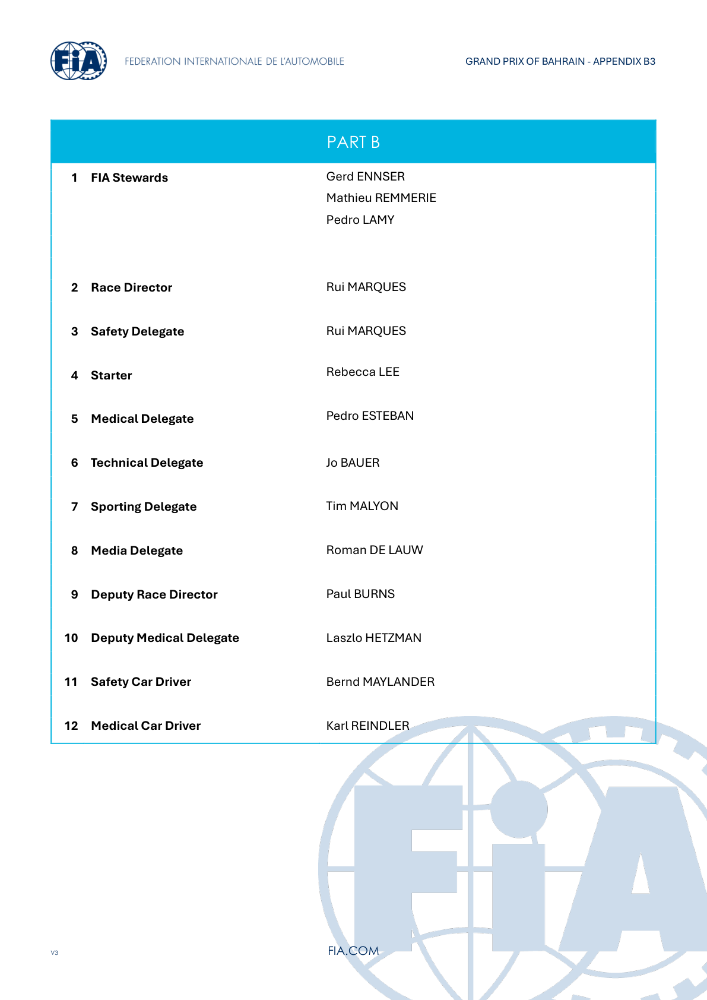
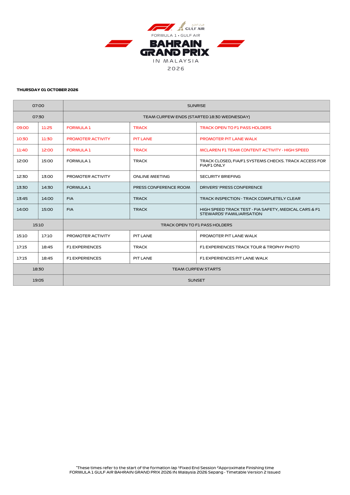
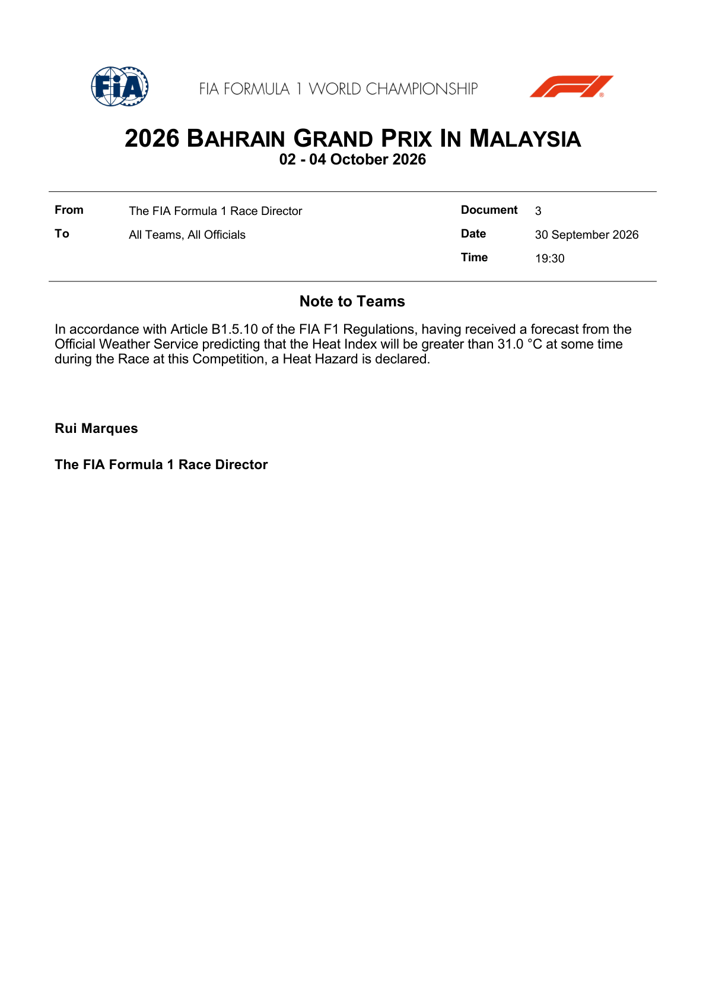
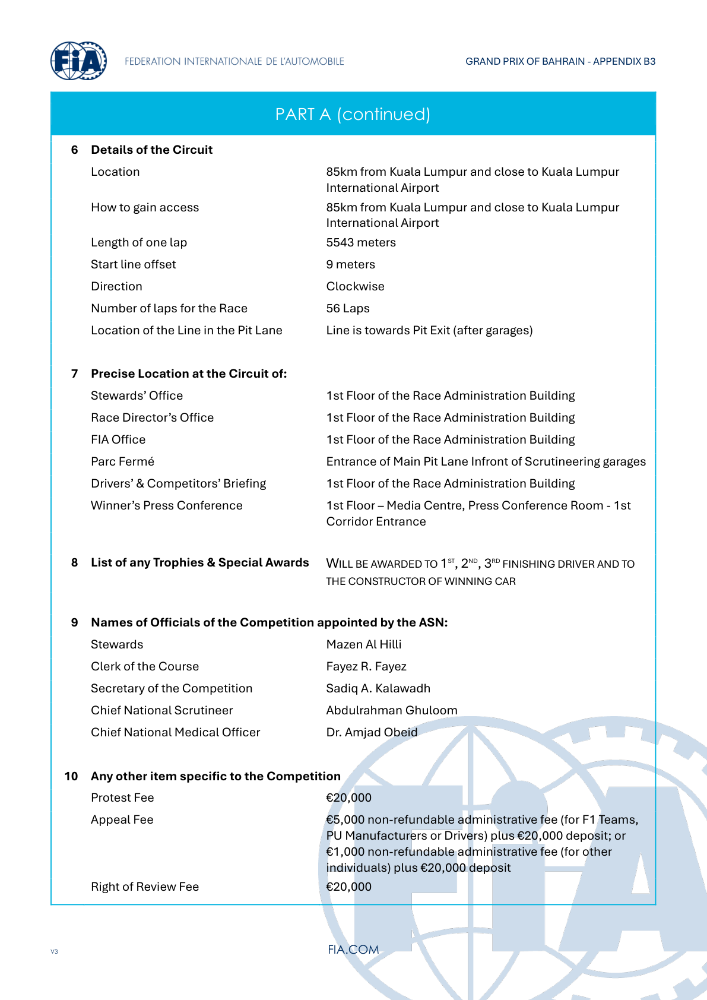
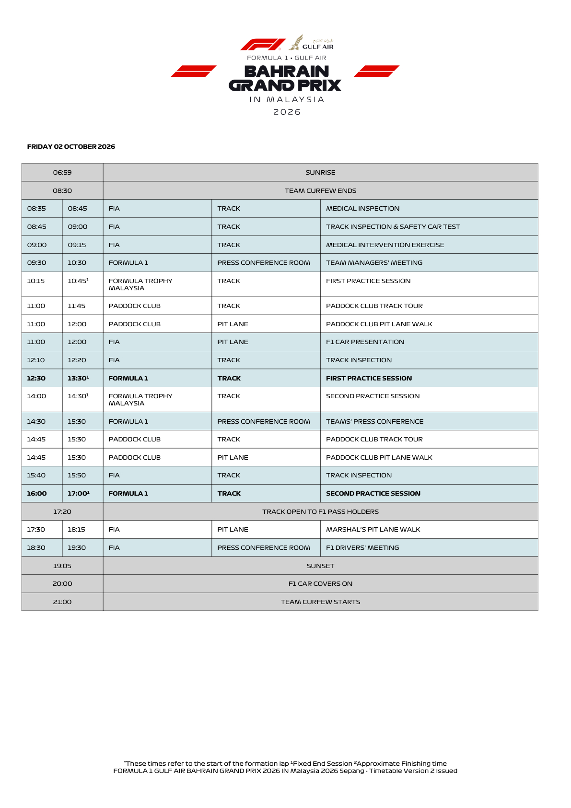
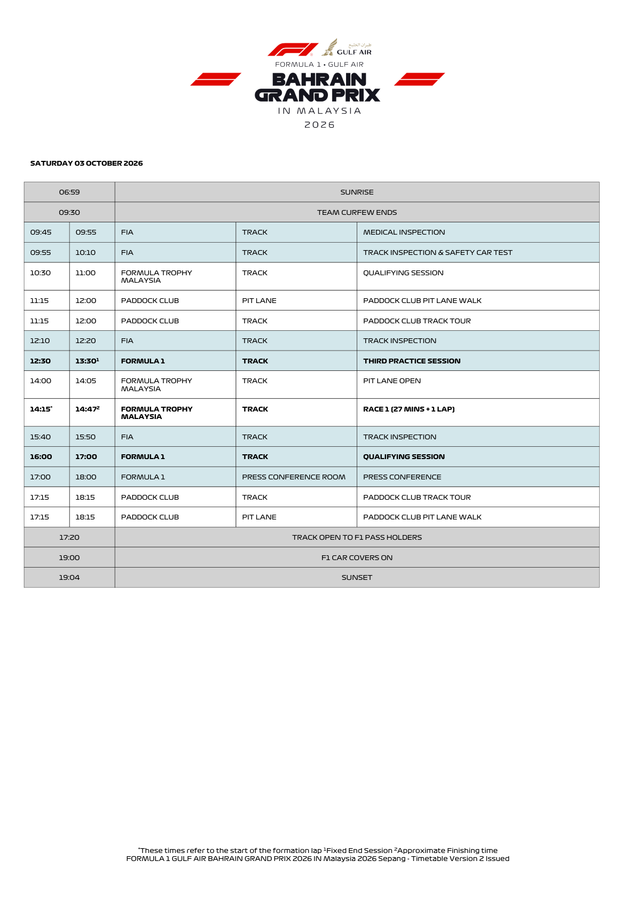
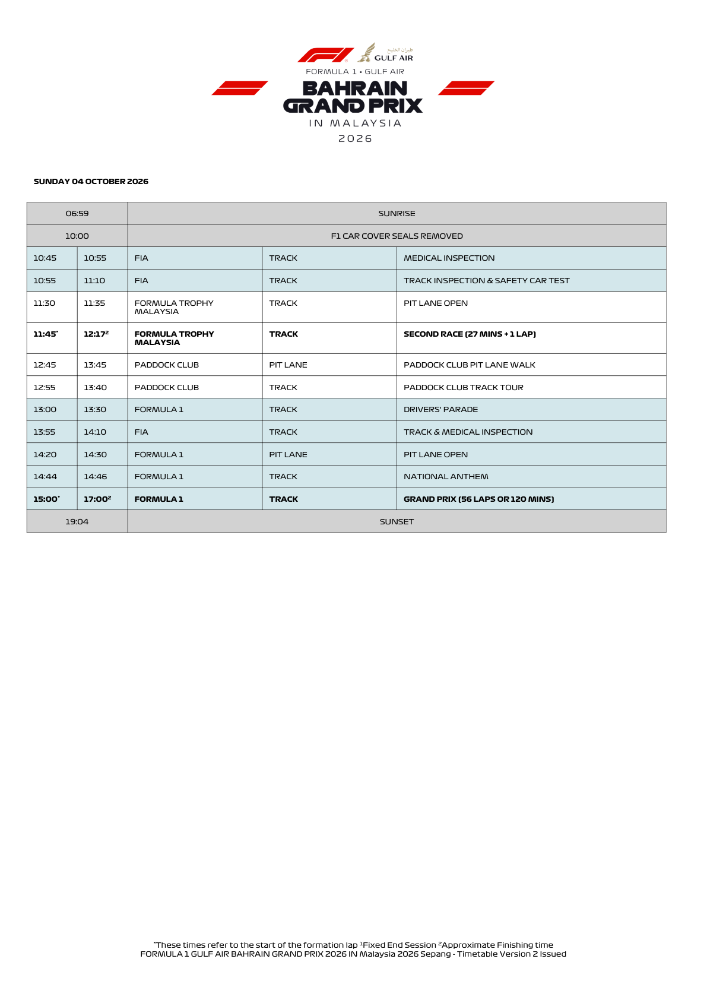

Schedule & Weather
All sessions in Kuala Lumpur (MYT) and Tallinn (EEST), with the live forecast attached to each.
FIA official heat declarations, competition visa & timetable
Official source; curated transcription may await review. Linked PDFs are the authority. Discovery does not extract or verify numeric values, and does not replace the curated material below.
Latest discovery attempt failed (2026-10-09T23:44:23.586275+00:00). Publication status could not be verified; any links below are from the last successful discovery.
Last successful FIA document discovery: 2026-10-09T12:29:42.915954+00:00. This is retrieval time, not issue time; newer revisions may exist.
Session times
| Session | Day | Kuala Lumpur (MYT) | Tallinn (EEST) |
|---|---|---|---|
| Practice 1 | Fri 2 Oct | 12:30 | 07:30 |
| Practice 2 | Fri 2 Oct | 16:00 | 11:00 |
| Practice 3 | Sat 3 Oct | 12:30 | 07:30 |
| Qualifying | Sat 3 Oct | 16:00 | 11:00 |
| Race | Sun 4 Oct | 15:00 | 10:00 |
Weather
The FIA Competition Visa confirms Sunday 4 October, 15:00 MYT / 10:00 Tallinn, 56 laps of the 5.543 km Sepang circuit, with a 9 m start-line offset. FP1/FP2 are Friday and FP3/Qualifying Saturday; this is not a Sprint weekend. Visa V2 (Document 13) and official timetable.
Official FIA document screenshots
Some FIA screenshots could not be refreshed. Any existing images are from successful earlier downloads; use the original PDFs to check later revisions.
Automatically rendered from the official PDFs. These figures do not update or verify the curated numeric transcriptions above. Unchanged pages already illustrated above are not repeated here.
2026_bahrain_grand_prix_in_malaysia_-_competition_visa_v2.pdf
PDF retrieved 2026-10-09T12:29:53+00:00; this is not its issue date.







2026_bahrain_grand_prix_in_malaysia_-_heat_hazard_declaration.pdf
PDF retrieved 2026-10-09T12:29:53+00:00; this is not its issue date.

2026_bahrain_grand_prix_in_malaysia_-_competition_visa.pdf
PDF retrieved 2026-10-01T20:23:00+00:00; this is not its issue date.







